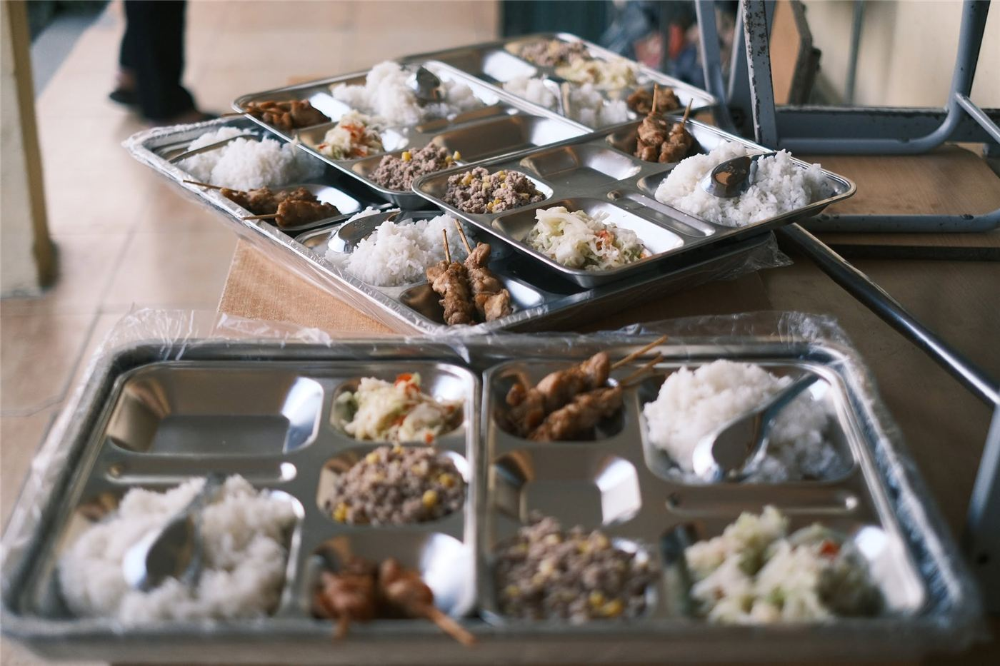
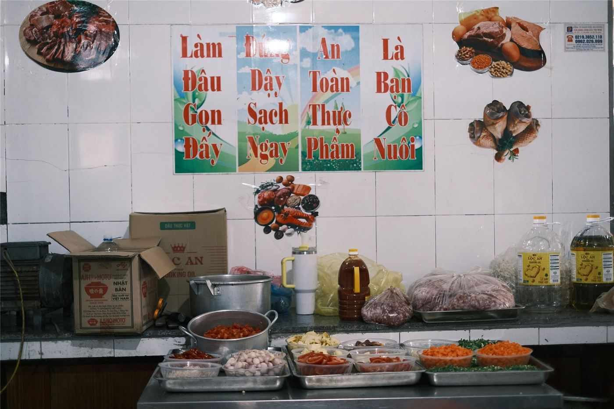

Phóng sự 02
Một ngày ở điểm trường: Những điều làm nên nhịp sống học đường
Ở điểm trường Khau Noong, Trường Mầm non Thạch Lâm, huyện Bảo Lâm, Cao Bằng, chuyện đến lớp không chỉ gói gọn trong những giờ học. Bữa ăn giữa ngày, khoảng thời gian vui chơi và sự chăm sóc của thầy cô cũng góp phần làm nên nhịp sống học đường của những đứa trẻ vùng cao.
Khi đến lớp trở thành niềm vui

Một ngày ở trường của trẻ nhỏ được tạo nên từ nhiều điều tưởng chừng rất đỗi bình thường: được gặp bạn bè, tham gia các hoạt động cùng cô giáo, vui chơi và ăn một bữa cơm tại trường. Nhưng ở những điểm trường vùng cao, để duy trì nhịp sinh hoạt ấy đều đặn mỗi ngày, đôi khi cần đến sự chung tay của cả nhà trường và cộng đồng.
Câu chuyện tại điểm trường Khau Noong, thuộc Trường Mầm non Thạch Lâm, huyện Bảo Lâm, tỉnh Cao Bằng, cho thấy vai trò của những điều kiện chăm sóc thiết thực đối với việc học tập của trẻ. Theo VietnamPlus, trước khi được hỗ trợ bữa ăn bán trú, điểm trường từng chỉ có khoảng 12 trẻ đến lớp mỗi ngày. Sau khi chương trình hỗ trợ được triển khai, số trẻ đến trường tăng lên 33 em, theo chia sẻ của cô Nông Thị Tuyết, giáo viên tại điểm trường.
Sự thay đổi ấy không chỉ nằm ở số lượng trẻ có mặt trong lớp. Khi việc đến trường gắn với những điều kiện sinh hoạt phù hợp hơn, trẻ có thêm cơ hội tham gia các hoạt động học tập, vui chơi và giao tiếp cùng bạn bè.
Bữa ăn giữa ngày, thêm một lý do để đến trường

Với trẻ mầm non, bữa ăn không đơn thuần là khoảng nghỉ giữa các hoạt động. Đó còn là một phần quan trọng trong quá trình chăm sóc và phát triển thể chất. Tại Khau Noong, chương trình “Cùng em khôn lớn” của Quỹ Vì tầm vóc Việt đã hỗ trợ các bữa ăn bán trú có rau, củ, quả, thịt cùng bữa phụ buổi chiều cho trẻ thụ hưởng chương trình.
Trước đó, theo tư liệu VietnamPlus năm 2023, trẻ tại các điểm trường được phản ánh thường mang theo bữa trưa đơn giản từ nhà. Việc thiếu bữa ăn bán trú cũng khiến nhiều em không tiếp tục ở trường vào buổi chiều. Khi được hỗ trợ bữa ăn, trẻ có thêm điều kiện ở lại trường và duy trì việc học trong ngày.
Cô Nông Thị Tuyết chia sẻ rằng điểm trường hiện có đủ 33 trẻ đến lớp, đồng thời cho biết các em được ăn những bữa có rau, thịt, cá thay vì chỉ có mèn mén như ở nhà. Lời kể ấy gợi ra một điều giản dị: chăm lo cho trẻ đến trường không chỉ là chuẩn bị bài học, mà còn cần quan tâm đến những nhu cầu thiết yếu đi cùng mỗi ngày học.
Nhịp sống học đường được làm nên từ nhiều người
Một điểm trường không chỉ vận hành nhờ những giờ đứng lớp của giáo viên. Đằng sau việc duy trì hoạt động học tập và chăm sóc trẻ còn có sự phối hợp của nhà trường, gia đình và những người góp sức từ bên ngoài.
Tại Khau Noong, bên cạnh việc hỗ trợ bữa ăn, chương trình còn bổ sung một số vật dụng phục vụ sinh hoạt và chăm sóc bán trú tại các điểm trường. Những hỗ trợ này hướng đến các nhu cầu cụ thể của trẻ, từ ăn uống đến điều kiện sinh hoạt trong thời gian ở trường.

Từ câu chuyện tại Khau Noong, có thể thấy sự hỗ trợ dành cho trẻ em vùng cao sẽ thiết thực hơn khi bắt đầu bằng việc tìm hiểu điều các em và nhà trường thực sự cần. Một bữa ăn đủ chất, một không gian học tập phù hợp hay những vật dụng phục vụ sinh hoạt đều có thể góp phần cải thiện trải nghiệm đến trường — miễn là được lựa chọn đúng nhu cầu và duy trì lâu dài.
Một ngày học của trẻ có thể không có sự kiện đặc biệt nào. Nhưng trong từng giờ học, giờ chơi và bữa ăn, nhịp sống học đường vẫn được vun đắp bằng những việc làm cụ thể. Để trẻ đến lớp đều đặn, được học tập và lớn lên trong môi trường an toàn, sự quan tâm cần hiện diện không chỉ trong những dịp trao quà, mà cả trong cách cộng đồng lắng nghe và đồng hành với nhà trường.
Bài viết khai thác tư liệu VietnamPlus, “Bữa ăn bán trú: Mang hạnh phúc và sức vóc tới cho trẻ vùng cao”, đăng ngày 1/6/2023. Thông tin phản ánh tại thời điểm bài báo được đăng; cần liên hệ nhà trường để cập nhật tình hình hiện nay trước khi xuất bản.
◆ ◆ ◆